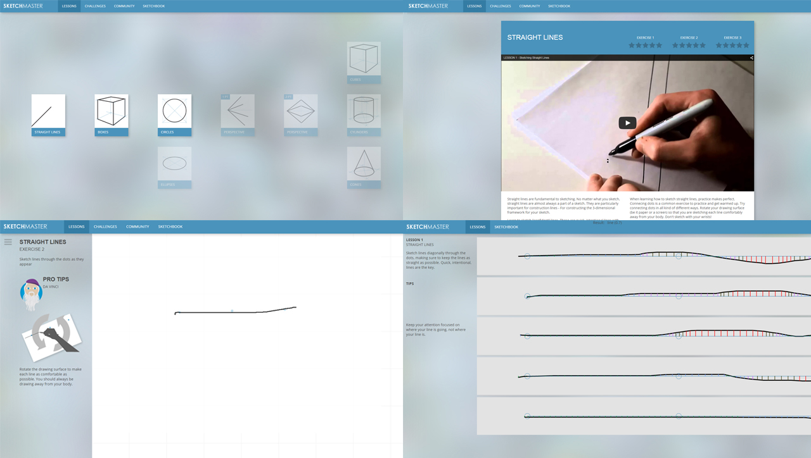
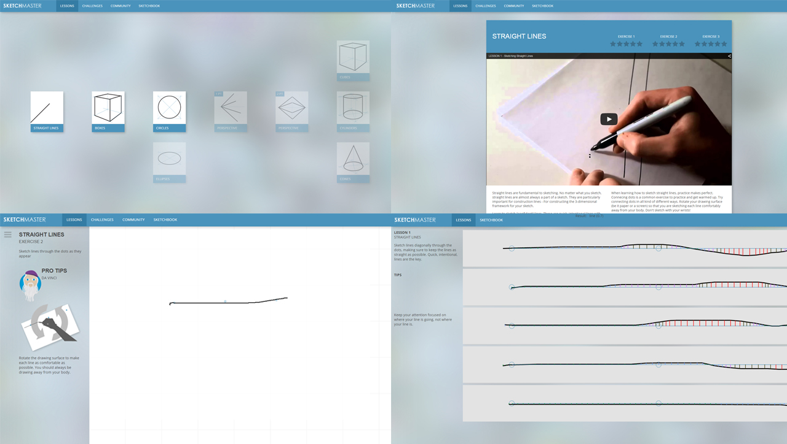

SketchTivity is an NSF-funded research project being developed at the Sketch Recognition Lab for teaching basic drawing skills. I lead the design and development of the system and it is the topic of my dissertation. We focus on a practical form of drawing known as design sketching or conceptual sketching, with a special emphasis on teaching engineers the skill.
The sofware has been implemented in 3 high schools and at Georgia Tech's Mechanical Engineering and Industrial Design programs, and we have ongoing studies to evaluate its effectiveness at improving basic sketching ability.
We utilize sketch recognition to give real-time feedback as people learn fundamentals of sketching. We explore different ways of doing this by extracting various features from sketches. We also utlize proven concepts in education theory like mastery learning, and self-regulated learning to motivate students to practice and develop their skills.
Sketching is a skill that can be difficult to learn for many people. The act of drawing is complex and relies on many different physical and cognitive functions working together including fine motor control, spatial reasoning, hand-eye coordination, visual memory, perception, and so on. Mastery of the skill requires a great deal of effort and many hours of practice. Many people have low self-efficacy with regards to sketching, and this hinders their ability to improve and master the skill.
One of the biggest problems with traditional pedagogy - Studio environments is the comparison to peers and lack of feeling any sense of achievement for many people. It often leads to feelings of learned helplessness. It's also difficult for teachers to cater their teaching to individual students. They simply don't have the time our resources to always individualize the learning experience.
My research has led to me realize the major difference between beginners who struggle at sketching and their more advanced peers is self-efficacy. I believe there is an important theoretical “threshold” which shifts a beginners mindset and leads to further mastery of sketching. Some people reach this threshold quickly and easily, others struggle. Either way, at this point the learner is: - Beginning to unlearn any negative thought patterns that kept them from improving drawing skills i.e. “I’m not a good at drawing” or “I’m just not creative / artistic” Beginning to be encouraged by seeing peer’s work, rather than discouraged. (Peers should still be around the same level of mastery) - Are more likely to take control of their learning experience (self-regulated learning) - May gain a more intrinsic desire to improve sketching ability without relying on external praise or external motivators.
In order to determine how gaming elements could be implemented, I developed a motivation model inspired by the works of Richard Bartle (Bartle Test) and Jon Radoff. With the survey results, I was able to see how motivation is different from person to person and also changes based on skill level. Ultimately this had led to the design decision that the software should initially be achievement based (extrinsic motivator), but then eventually allow for many other motivators as the user becomes more confident, and becomes more intrinsically motivated to get better.
The first prototypes were paper-based. This allowed to explore exercise designs with virtually the same interaction, just real pen and paper, not a stylus and a touchscreen device. For the assessment, I used a Wizard of Oz technique to simulate what the software's feedback might be like.
I went on to build interactive prototypes with HTML / CSS / JS. Not long after this our NSF grant was accepted and SRL began working on the project (I joined SRL 2 years later to lead development)
 

My dissertation work explores novel sketch recognition algorithms, game-based learning approaches, ways of giving intelligent and useful feedback to learners, and so on. More to come.